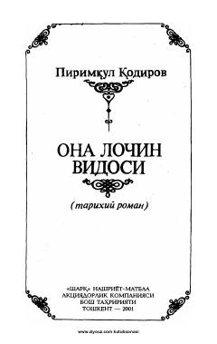

OLGavharshod begimning hayoti va adolat yo'lidagi kurashiga bag'ishlangan tarixiy roman.
Ushbu tarixiy romanda Gavharshod begimning hayoti va taqdiri tasvirlanadi. Asarda Mirzo Ulug'bek va Alisher Navoiy kabi buyuk siymolarga mehr ko'rsatgan, adolat uchun kurashgan ma'rifatli ona obrazi gavdalantirilgan.